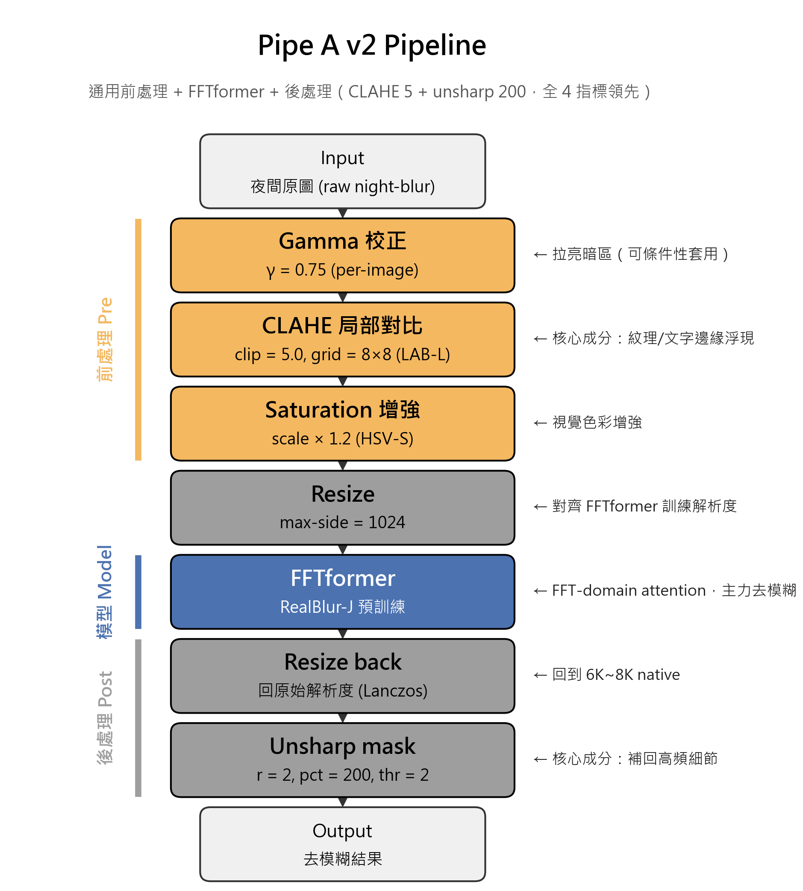
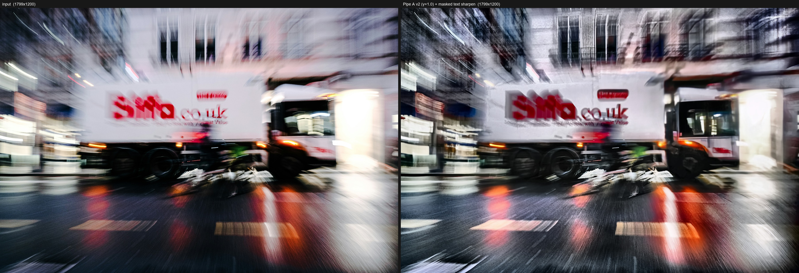
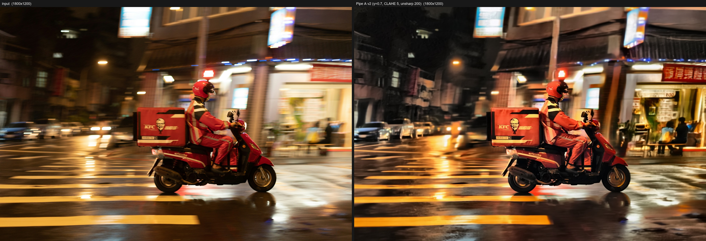
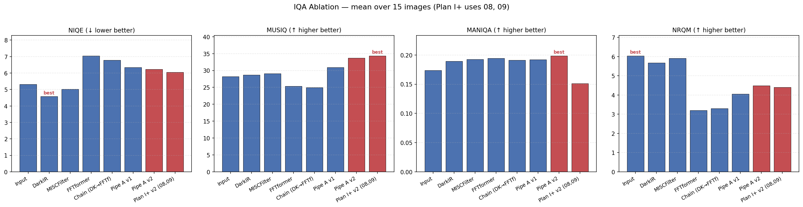
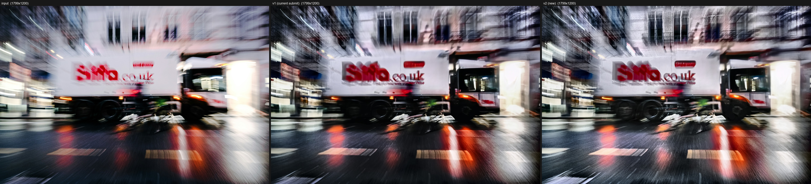
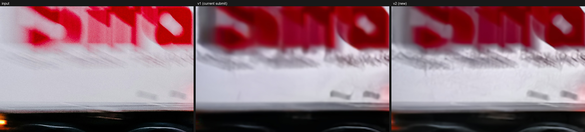
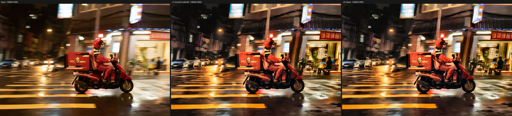
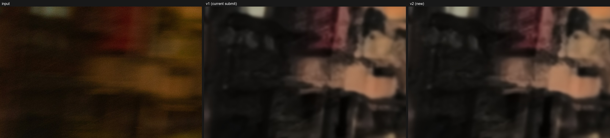
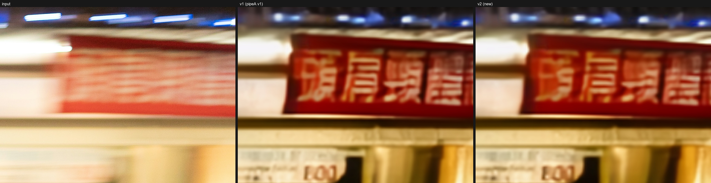

組員
113950011 鄭名翔
[id] [teammate]
[id] [teammate]
夜間運動模糊影像修復 · Pipe A v2 管線
這個專題的目標是修復 15 張在夜間或低光環境拍攝、含有運動模糊的真實照片，並從近年發表的開源 deblurring 方法中挑選一個做改進。
我們做的事情可以拆成三步：先在五張代表性影像上快速比較 DarkIR、MISCFilter、FFTformer、Real-ESRGAN，挑出 FFTformer（RealBlur-J 預訓練） 作為主力；再設計一條手刻前處理管線（Pipe A），用 gamma、CLAHE、HSV saturation 把夜間 OOD 影像分布推回 FFTformer 的訓練分布，後處理用 unsharp 補回降採損失；最後針對個別影像的瓶頸做點狀補強，例如 09 號 White Truck 的紅色 Biffa 文字加上飽和度遮罩的銳化。
15 張影像的 4 個 NR-IQA 指標平均結果，Pipe A v2 的 MUSIQ 達 33.74，比原圖的 28.22 高 +5.52，是所有候選方法中最高。一個對照組（DarkIR → FFTformer 串接，稱為 Chain）反而讓 MUSIQ 從 25.38 降到 24.95，顯示「訓練過的低光增強當前處理」會傷害感知品質，而手刻前處理才有正效益。
繳交的兩張影像是 09 White Truck（γ=1.0，MUSIQ 36.41，提升 +11.39）與 08 KFC Rider（γ=0.7，MUSIQ 32.32，提升 +3.14）。
題目給定 15 張夜間或雨夜的運動模糊照片，要求從近年主要影像處理會議的開源方法中挑選並改進，最終繳交 2 張視覺最佳的結果做公開互評。評分組成為互評 40%、書面報告 40%、課堂簡報 10%、出席 10%，繳交日期是 2026 年 6 月 11 日。
影像解析度落在 3000×4000 至 8000×5300 之間（平均約 6K），遠高於主流 deblurring benchmark（GoPro、RealBlur）的訓練解析度。內容涵蓋光跡街景、招牌反射、夜市人潮、雨夜外送、運動人像等情境，模糊類型也不單一，包含 linear motion、zoom blur、shake、panning，以及含玻璃反射或雨滴的混合模糊。
主要難度有四個。
第一是分布不符。FFTformer、Restormer、MPRNet 等主流方法都用 GoPro 或 RealBlur 訓練，前者是相機高速拍攝後合成的運動軌跡，後者雖然是真實場景但以白天良光為主。我們的照片是夜拍 / 低光 / 雨夜，曝光分布、雜訊統計、彩色光源都跟訓練資料不一樣，預訓練模型在這種 OOD 設定下容易出兩種錯：要嘛不去模糊（輸出近似輸入），要嘛產生光暈與銳化偽影。
第二是高解析度推論。Transformer 的注意力範圍受訓練尺寸限制，當推論輸入遠大於訓練尺寸時 attention 沒辦法完整 attend 到整個模糊核。我們的 GPU 是 16 GB VRAM（RTX 5070 Ti），必須在「降採推論」與「tiling 推論」之間取捨。
第三是沒有 ground truth。本題沒提供清晰的成對影像，無法用 PSNR / SSIM，只能依賴 no-reference IQA。NR-IQA 指標各自有偏差（例如 NIQE 偏好原圖、會懲罰任何處理），單一指標的結論可能誤導，必須用多指標交叉驗證。
第四是通用 vs 逐圖細調的取捨。繳交只需 2 張，理論上可以對每張獨立調到最好，但這樣難以寫成可重複的方法；如果硬要一條 pipeline 處理 15 張，又無法針對個別瓶頸做最後一公里優化。
通用 deblurring 領域的近期方法大致分為三代。第一代是 multi-stage CNN，以 MPRNet [3] 為代表，靠 coarse-to-fine 的多階段架構處理不同尺度的模糊。第二代是 transformer，Restormer [1] 用 MDTA 降低 attention 計算量，FFTformer [2] 進一步把 attention 搬到頻率域，利用模糊在 FFT 域的稀疏特性擴大感受野。第三代有 state-space model（EVSSM [5]）與 diffusion-based 方法（TP-Diff [8]），後者特別擅長文字場景但推論速度太慢，不適合本題 6K~8K 的影像尺寸。另一個 CVPR 2024 的 MISCFilter [4] 明確建模模糊核方向性，我們在實驗中保留它做對照。
低光影像增強（LLIE）跟 deblurring 是不同的任務。LLIE 方法（例如 DarkIR [6]）的訓練目標是把暗區提亮、保持紋理，並沒有顯式建模模糊核的反捲積；如果輸入同時有模糊與低光，LLIE 的輸出仍會保持原本的模糊狀態。我們的快速 benchmark 確認了這點：DarkIR 雖然能大幅提亮，但模糊邊緣依然糊。本題中我們沒把 DarkIR 當主力，而是作為「訓練式前處理」的對照（DarkIR → FFTformer，稱為 Chain），用來驗證手刻前處理是否真的優於訓練式（§4.4）。
Real-ESRGAN [7] 是合成資料訓練的盲式超解析，常被當成銳化後處理。我們在前期測過它對 Pipe A 輸出的進一步銳化效果：自然紋理區有正面效果，但文字 / 招牌區會引入 cartoon-like 偽影，反而傷害可讀性，所以沒有納入最終 pipeline。
評估方面，因為沒有 ground truth，我們採四個 no-reference IQA 指標：NIQE（Mittal 2013，越低越好）、MUSIQ（Ke et al. ICCV 2021）、MANIQA（Yang et al. CVPR 2022）、NRQM（Ma et al. 2017）。MUSIQ 與 MANIQA 是 transformer / attention 系，比較貼近人類感知；NIQE 與 NRQM 偏好「自然」原圖，會懲罰任何銳化或對比強化。用四個指標交叉驗證能削弱單一指標的偏差。
本節描述的是最終版 Pipe A v2（CLAHE clip=5.0、unsharp percent=200）。v1 → v2 的優化過程留到 §4.6。
我們先用 5 張代表性影像（編號 03、07、08、09、14，涵蓋低光、街景、人像、雨夜）對候選方法做 quick benchmark。結論如下：DarkIR 能拉亮但不去模糊，本質是 exposure remapping；MISCFilter 對文字邊緣有微幅改善但會引入色偏，且 inline CUDA kernel 部署門檻高；Real-ESRGAN 在文字場景容易產生 cartoon-like 偽影；FFTformer 在主觀去模糊強度上最強，特別是對 linear motion blur 反應乾淨。
因此選 FFTformer（RealBlur-J 預訓練）為主力，然後設計前後處理把它的效益放大。
Pipe A 的整體流程如 Fig. 3.1，分三個區塊：
設計哲學是「把 OOD 輸入推回模型訓練分布」。FFTformer 在 RealBlur-J 上表現好，但 RealBlur-J 是白天合成模糊，我們的夜間影像在曝光、雜訊、對比這幾個面向都偏離此分布。Pipe A 的三步前處理是手刻的分布轉換器，目的是讓 FFTformer 收到的輸入在統計上接近 in-distribution，而且整套不需要訓練資料、不需要梯度更新，純粹用經典影像處理就能達成。

Fig. 3.1 Pipe A v2 pipeline。橘色為前處理、藍色為 FFTformer、灰色為後處理。
設輸入為 $I \in [0, 255]^{H \times W \times 3}$。
Gamma 校正：對每個通道套 $I_\gamma = 255 \cdot (I / 255)^{1/\gamma}$，預設 $\gamma=0.75$。把直方圖往中間區段壓縮，相當於拉亮暗區、保留亮部，讓輸入的中位曝光接近 RealBlur-J 的範圍。Ablation 顯示 gamma 在全資料集平均下不是通用增益（§4.6），對偏暗影像有效但對中等曝光影像會壓平動態範圍，所以是 per-image 條件性套用。
CLAHE 局部對比強化：在 LAB 色彩空間的 L 通道套 CLAHE，clip=5.0、grid=8×8，做完再轉回 RGB。CLAHE 把影像切成 8×8 個 tile，每個 tile 內部做限幅的直方圖等化，讓建築紋理、文字邊緣等中頻細節在進 FFTformer 之前先被適度放大。clip 值是 §4.6 參數掃描的結果，3.0 → 5.0 MUSIQ 單調上升，再高會在天空與平面區產生塊狀偽影。
HSV 飽和度增強：S 通道乘以 1.2 再 clip 回 [0, 255]。補償前兩步後感官上偏灰的問題，並讓彩色招牌、霓虹的特徵更突出。
FFTformer 的訓練資料 RealBlur-J 影像長邊約 1280。當輸入解析度遠大於訓練分布時，transformer 的有效感受野相對縮小，大尺度模糊核無法被完整 attend。實測在 6K~8K 原生解析度推論的結果遠不如降到長邊 1024 後再推論，後者更接近 RealBlur-J 上的主觀去模糊強度。
具體步驟是：先把前處理後的影像 resize 到 $\max(W, H) = 1024$ 並保持長寬比，丟進 FFTformer，最後用 Lanczos 放大回原尺寸。
降採再放大會造成可預期的高頻衰減，所以套一次 unsharp：$I_\text{out} = \hat{I} + \alpha (\hat{I} - G_\sigma * \hat{I})$，$\alpha=2.0$（PIL percent=200），radius=2，threshold=2。Ablation 顯示 unsharp 是 Pipe A 第二重要的成分（拿掉 MUSIQ −2.94），影響力接近 CLAHE 的 75%。percent 從 100 到 200 在 MUSIQ 上單調遞增（§4.6），再高會在文字邊緣產生 ringing。
Pipe A 處理完後，少數場景的關鍵高彩度區域（紅色品牌標誌、霓虹文字）邊緣可能還是不夠銳。全圖加重 unsharp 會放大暗區的 ISO 雜訊；手動圈 mask 又無法泛化。
觀察夜間影像時可以發現：需要強化的物件（招牌、文字、車身標誌）通常飽和度遠高於背景。所以可以拿飽和度當自動空間遮罩，只在高彩度區追加 unsharp。
實作上，先把影像轉到 HSV，計算 $M_\text{raw} = \text{clip}((S - \tau) / (255 - \tau), 0, 1)$，飽和度門檻 $\tau = 70$。再對 $M_\text{raw}$ 做 Gaussian 羽化（kernel 半徑 15）避免硬邊，得到最終 mask $M$。然後對 Pipe A 輸出 $I_\text{base}$ 套一次強 unsharp（pct=220、radius=3）得到 $I_\text{sharp}$，最後用 mask 線性混合：$I_\text{out} = M \cdot I_\text{sharp} + (1-M) \cdot I_\text{base}$。
效果是：高彩度區（文字、標誌）得到強烈額外銳化，低彩度區保留 Pipe A 結果不變。
Pipe A 已能對 15 張影像普遍取得改善，但同一條 pipeline 不會對每張圖都最佳。繳交的兩張影像分別針對殘餘瓶頸做點狀補強。
09 White Truck：zoom blur + 雨絲場景，主體是一台車身印有紅色 Biffa 字樣的白色卡車。這張本身曝光中等並不偏暗，Pipe A 預設的 γ=0.75 反而會壓平車身的動態範圍。我們改用 γ=1.0（跳過 gamma），其他維持 Pipe A v2 設定，然後套用 §3.3 的飽和度遮罩銳化。MUSIQ 從 v1 的 28.71 提升到 v2 的 36.41，提升 +7.70（Fig. 3.2）。

Fig. 3.2 09 White Truck 繳交版（左：原圖，右：Pipe A v2 + γ=1.0 + masked text sharpen）。MUSIQ 25.02 → 36.41。
08 KFC Rider：雨夜 KFC 外送員，曝光比 09 更暗，左側商店招牌幾乎看不見，右側遠景的紅色直式招牌（中文「頭肩頸…」字樣）也被運動模糊抹成一片紅。前處理加強為 γ=0.70、saturation 1.25，CLAHE 與 unsharp 維持 Pipe A v2 baseline。MUSIQ 從 31.59 提升到 32.32，MANIQA 從 0.158 提升到 0.166（Fig. 3.3）。值得一提的是右側遠景紅色招牌的字樣在 v2 也恢復可辨識（Fig. 4.6），這是視覺上很驚豔的細節。

Fig. 3.3 08 KFC Rider 繳交版（左：原圖，右：Pipe A v2 + γ=0.70）。MUSIQ 29.18 → 32.32。
逐圖細調的流程不是 grid search，而是先套 Pipe A 預設參數產生初版，比對 native-resolution crop 找殘餘瓶頸（文字過軟、暗區未還原、雜訊偏高），再依瓶頸類型決定要不要加上額外處理。
硬體是 NVIDIA RTX 5070 Ti（Blackwell 架構，sm_120，16 GB VRAM）。軟體環境是 Windows 11，Python 3.11，PyTorch 2.11.0+cu128，cupy 13.x（含 nvrtc 12.9）。
工程上幾個雷需要踩：Blackwell（sm_120）目前還沒被 PyTorch 2.0–2.10 系列原生支援，要裝 2.11.0+cu128 之後的 nightly build；pip-installed 的 basicsr 有 torchvision.transforms.functional_tensor 已被移除的 import 問題，要 monkey-patch；FFTformer 的模型架構檔要用 importlib.util.spec_from_file_location 動態載入繞過破損的 basicsr import chain；MISCFilter 的 inline CUDA kernel 要改寫成 cupy 12+ 的 RawModule API，因為舊版的 compile_with_cache 已經被移除。
推論策略：FFTformer 在原生 6K~8K 解析度推論會 OOM，所以採「降採到長邊 1024 → 推論 → Lanczos 放大回原尺寸」。MISCFilter 一次處理 384 個 tile 會佔到 35 GB VRAM，要用 --tile-batch 8 的 mini-batch 分批跑。
評估用 4 個 no-reference IQA 指標（pyiqa 0.1.13 計算）：
| 指標 | 方向 | 性質 |
|---|---|---|
| NIQE | 越低越好 | 自然影像統計 |
| MUSIQ | 越高越好 | Transformer，KonIQ 訓練 |
| MANIQA | 越高越好 | Attention，KonIQ 訓練 |
| NRQM | 越高越好 | Blind SR 風格 |
對比 8 個方法：input（原圖）、darkir（DarkIR blend 50%）、miscf（MISCFilter）、fftf（FFTformer 單獨）、chain（DarkIR → FFTformer）、pipeA_v1（CLAHE 3、unsharp 130 早期版）、pipeA（v2 CLAHE 5、unsharp 200）、final（Plan I+ v2 兩張繳交）。
評分時為避免 MUSIQ / MANIQA 在大解析度下 OOM，輸入影像先降採到長邊 2048 再計算。
4 指標 × 8 方法（15 張影像平均，final 只有 2 張）：
| Method | NIQE↓ | MUSIQ↑ | MANIQA↑ | NRQM↑ |
|---|---|---|---|---|
| input | 5.31 | 28.22 | 0.174 | 6.04 |
| darkir | 4.58 | 28.66 | 0.189 | 5.68 |
| miscf | 5.02 | 29.11 | 0.193 | 5.92 |
| fftf | 7.05 | 25.38 | 0.194 | 3.20 |
| chain | 6.78 | 24.95 | 0.191 | 3.30 |
| pipeA_v1 | 6.35 | 30.96 | 0.192 | 4.06 |
| pipeA v2 | 6.23 | 33.74 | 0.199 | 4.49 |
| final | 6.05 | 34.37 | 0.151 | 4.40 |
對應 bar chart 見 Fig. 4.1。

Fig. 4.1 4 個 NR-IQA 指標 × 8 方法 × 15 張影像平均。紅色 bar 為 Pipe A v2 與 Plan I+ v2。
幾個重點：
Pipe A v2 在 MUSIQ 達 33.74，比原圖 28.22 高 +5.52，是所有方法中最大絕對增益；在 MANIQA 與 NRQM 上也是 deblur 家族最高。NIQE 唯一較好的是 DarkIR，但 DarkIR 並未真正去模糊（§4.4），這是 naturalness-based IQA 對任何處理都有的固有偏差。
MANIQA 顯示所有 deblur 方法都比原圖高 10–14%，但彼此差異小，分辨能力不如 MUSIQ。
v1 → v2 在四個指標上全部變好、沒有 trade-off，優化的細節在 §4.6.2。
驗證「手刻前處理是否真的優於訓練式前處理」的關鍵實驗。三組設定的 FFTformer 推論完全相同，差異只在前處理：
| 設定 | MUSIQ | Δ vs fftf |
|---|---|---|
fftf（無前處理） |
25.38 | — |
chain（DarkIR 訓練式前處理） |
24.95 | −0.43 |
pipeA_v1（手刻 v1） |
30.96 | +5.58 |
pipeA v2（手刻 v2） |
33.74 | +8.36 |
訓練過的 DarkIR 放在 FFTformer 前不只沒幫助，反而讓 MUSIQ 下降 0.43；手刻 Pipe A 即使在保守參數的 v1 也能拉升 5.58，優化後的 v2 達到 +8.36。
可能的原因是 DarkIR 為了提亮會對影像做隱式的雜訊抑制與細節平滑，FFTformer 在後續推論時就失去了高頻線索。相對地，gamma + CLAHE 只做點對點與局部對比變換，不改變高頻細節結構，所以能無損地把分布推回 FFTformer 訓練資料的鄰域。
09 White Truck 與 08 KFC Rider 的 v1 vs v2 native-resolution crop 對比見 Fig. 4.2–4.6。

Fig. 4.2 09 White Truck 全圖對比（原圖｜v1 繳交｜v2 繳交）。

Fig. 4.3 09 Biffa 紅字 native-resolution crop。v1 過軟，v2 邊緣銳利且可辨識字母。

Fig. 4.4 08 KFC Rider 全圖對比。

Fig. 4.5 08 左側 KFC 招牌 native crop。v2 恢復可閱讀字樣與柯內爾上校 logo。

Fig. 4.6 08 右側遠景紅色直式招牌 native crop。原圖完全是運動模糊抹開的紅色色塊，v1 已可辨識「頭肩頸…」字樣，v2 邊緣更銳，是視覺最驚豔的細節之一。
09 的主要改善是紅色 Biffa 字樣從完全糊掉的紅色色塊變為可辨識的五個字母，背景樹冠輪廓、車燈光暈、車身細節都浮現。MUSIQ 從 25.02 跳到 36.41，提升 +11.39，是全 15 張中最大的單張提升。
08 的主要改善是騎手側臉與頭盔結構從一團糊變立體，左側 KFC 招牌恢復可閱讀、右側遠景紅色中文招牌也從紅色色塊變回可讀字樣，雨夜街景縱深感提升。MUSIQ 29.18 → 32.32。
失敗案例：15 號攝影師玻璃反射與 02 號紅燈反射，主體被反射層覆蓋，所有方法都無法乾淨分離；06 號招牌震動的模糊核太大，所有 deblur 方法的 MUSIQ 都低於原圖。
從 Pipe A v1 baseline 拿掉一個成分（其他維持原參數）重跑 FFTformer + 後處理，計算 15 張平均：
| Variant | MUSIQ↑ | Δ MUSIQ |
|---|---|---|
| Pipe A v1 baseline (γ=0.75, CLAHE=3, sat=1.2, unsharp=130) | 30.96 | — |
| − γ（gamma=1.0） | 31.90 | +0.94 |
| − CLAHE（clip=0） | 27.11 | −3.85 |
| − Saturation（sat=1.0） | 31.13 | +0.17 |
| − Unsharp（pct=0） | 28.02 | −2.94 |
四個指標的完整數據在 report/iqa_ablation.csv。可以看到：
既然 CLAHE 與 unsharp 是核心，就針對這兩個成分做掃描，從 v1 baseline 找更佳設定。
CLAHE clip 掃描（固定 γ=0.75、sat=1.2、unsharp=130）：
| clip | MUSIQ↑ | Δ vs v1 |
|---|---|---|
| 2.0 | 30.11 | −0.85 |
| 3.0 (v1) | 30.96 | — |
| 4.0 | 31.49 | +0.53 |
| 5.0（選定） | 31.94 | +0.98 |
Unsharp percent 掃描（固定 γ=0.75、CLAHE=3.0、sat=1.2）：
| percent | MUSIQ↑ | Δ vs v1 |
|---|---|---|
| 100 | 30.44 | −0.52 |
| 130 (v1) | 30.96 | — |
| 160 | 31.69 | +0.73 |
| 200（選定） | 32.73 | +1.77 |
兩個成分在掃描範圍內都呈單調遞增。CLAHE 再高於 5.0 會在天空、平面區產生塊狀偽影；unsharp 再高於 200 會在文字邊緣產生 ringing。
合併兩個改進，得到 Pipe A v2（CLAHE 5.0、unsharp 200）。15 張影像重跑：
| 設定 | NIQE↓ | MUSIQ↑ | MANIQA↑ | NRQM↑ |
|---|---|---|---|---|
| Pipe A v1 | 6.35 | 30.96 | 0.192 | 4.06 |
| Pipe A v2 | 6.23 | 33.74 | 0.199 | 4.49 |
| Δ | −0.12 | +2.78 | +0.007 | +0.44 |
四個指標全部改善、沒有 trade-off。v1 → v2 的 +2.78 MUSIQ 增益比兩個單獨改動的和（+0.98 + +1.77 = +2.75）略多，顯示兩個成分有輕微的協同效應。
Ingredient ablation 顯示 gamma 在全資料集平均下不是必要。我們進一步在 09 White Truck（曝光中等、非典型偏暗）上測試這個發現的影響：
| 09 變體 | γ | CLAHE | Unsharp | MUSIQ |
|---|---|---|---|---|
| Plan I+ v1 | 0.75 | 3.0 | 130 | 28.71 |
| Plan I+ v2 | 1.0 | 5.0 | 200 | 36.41 |
09 v2 MUSIQ 跳升 +7.70，是 15 張中最大的單張提升，視覺上紅色 Biffa 文字邊緣明顯銳化、車身條紋紋理浮現、背景樹冠輪廓顯著恢復。這驗證了「gamma 對非偏暗影像反而壓平動態範圍」的論點。
08 KFC Rider 是典型偏暗影像，繳交版本維持 γ=0.7（更積極拉亮），符合 ablation 對「個別暗影像 gamma 有用」的預期。
相對於既有 paper 的差異與貢獻歸納為三點。
把 gamma、CLAHE clip 5.0、HSV saturation 三步前處理組合在 FFTformer 之前，後處理用 unsharp pct 200，整套不需要訓練資料、不更新權重，只靠經典影像處理把 OOD 輸入推回 FFTformer 訓練分布。透過 ingredient ablation 與 CLAHE / unsharp 參數掃描，從 v1 優化到 v2，15 張平均 MUSIQ 從 30.96 提升到 33.74，四個 NR-IQA 指標全面改善。
§4.4 的 Chain 控制組提供了最直接的證據：DarkIR 這種訓練過的低光增強放在 FFTformer 前會讓 MUSIQ 下降 0.43，而手刻 Pipe A v2 卻能把同一個 FFTformer 拉升 +8.36。手刻前處理優於訓練式前處理。
用 HSV 飽和度作為自動空間遮罩，把額外 unsharp 限制在高彩度區（紅色品牌字樣、霓虹招牌），避免在暗區放大雜訊。遮罩本身做 Gaussian 羽化避免硬邊。這是傳統 unsharp 與飽和度 gating 的結合，可直接套用到所有含高彩度物件的夜景。
09 號 White Truck 加上這個強化後 MUSIQ 達 36.41，較原圖 25.02 提升 +11.39（單張最大），背景雜訊未被放大。
多數 deblurring paper 只在 GoPro / RealBlur 這類合成或半合成 benchmark 評測，極少在「真實夜拍 + 大解析度」設定下做系統比較。本作業在 4 個 NR-IQA 指標 × 8 個方法 × 15 張影像上做完整評估，並設計 Chain（DarkIR → FFTformer）作為「訓練式前處理」的控制組，提供 v1 → v2 的優化軌跡。Chain 控制組的設計在現有文獻中沒見過前例。
本作業針對 15 張夜間運動模糊照片，提出以 FFTformer 為主力、Pipe A v2 為前處理、飽和度遮罩銳化為區域強化的雙層方法。Pipe A v2 在 MUSIQ 上達 33.74（vs 原圖 28.22，+5.52），是所有方法中最大絕對增益，並在 MANIQA、NRQM 上也是 deblur 家族最佳。Chain 控制組證明手刻前處理優於訓練式前處理。透過 ingredient ablation 與參數掃描從 v1 優化到 v2，四個指標全面改善。最終繳交的 09 White Truck（γ=1.0，MUSIQ 36.41，+11.39）與 08 KFC Rider（γ=0.7，MUSIQ 32.32，+3.14）視覺上達到「夜間 OOD 影像可顯著修復」的目標。
第一，玻璃反射場景無法處理。15 號攝影師玻璃反射、02 號紅燈反射等，主體被反射層覆蓋，這本質上是 layer separation 問題，需要 reflection removal 類方法。
第二，極大尺度 shake blur 仍是開放問題。06 號招牌震動的模糊核過大，FFTformer 的有效感受野不足以處理。
第三，naturalness-based IQA（NIQE、NRQM）對所有積極處理都有偏差，這是 IQA 領域的已知問題。多指標交叉驗證能削弱但無法根本解決。
若能採集真實 paired night-blur / sharp 資料集對 FFTformer 做 few-shot fine-tuning，預期能進一步提升 in-domain 表現。對含玻璃反射的影像可以先用 deep reflection removal 方法分離反射層再 deblur。Chain 控制組是「手刻 vs 訓練式前處理」的初步證據，若能在更多 deblur backbone 上驗證此差異，可發展為一般化的方法論。
[1] S. W. Zamir et al. Restormer: Efficient Transformer for High-Resolution Image Restoration. CVPR 2022.
[2] L. Kong et al. Efficient Frequency Domain-Based Transformers for High-Quality Image Deblurring. CVPR 2023.
[3] S. W. Zamir et al. Multi-Stage Progressive Image Restoration (MPRNet). CVPR 2021.
[4] P. Wang et al. MISCFilter: Motion-Inspired Spatial-Channel Filter for Image Deblurring. CVPR 2024.
[5] Y. Lu et al. EVSSM: Efficient Vision State-Space Model for Image Restoration. CVPR 2025.
[6] D. Wang et al. DarkIR: Lightweight Low-Light Image Enhancement Network. CVPR 2025.
[7] X. Wang et al. Real-ESRGAN: Training Real-World Blind Super-Resolution with Pure Synthetic Data. ICCV Workshops 2021.
[8] R. Yang et al. TP-Diff: Text-Prior Guided Diffusion Model for Image Deblurring. arXiv 2024.
[9] A. Mittal et al. Making a 'Completely Blind' Image Quality Analyzer. IEEE SPL 2013（NIQE）.
[10] J. Ke et al. MUSIQ: Multi-scale Image Quality Transformer. ICCV 2021.
[11] S. Yang et al. MANIQA: Multi-dimension Attention Network for No-Reference IQA. CVPR Workshops 2022.
[12] C. Ma et al. Learning a No-Reference Quality Metric for Single-Image Super-Resolution. CVIU 2017（NRQM）.